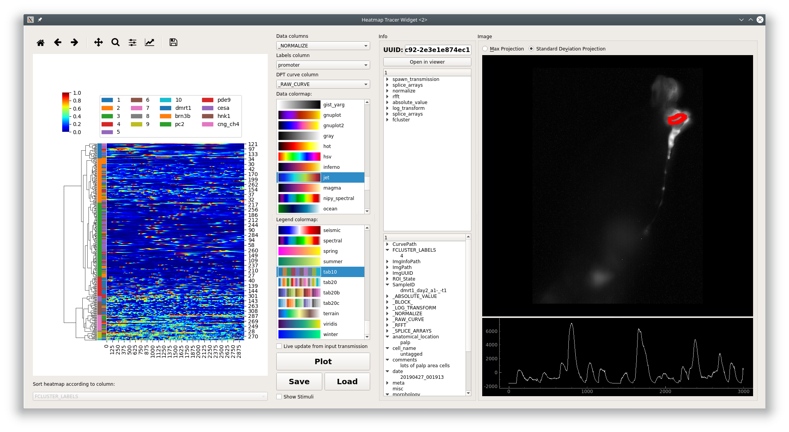

Heatmap¶
Note
This plot can be saved in an interactive form, see Saving plots
Visualize numerical arrays in the form of a heatmap. Also used for visualization of Hierarchical clusterting dendrograms. Datapoint Tracer is embedded.
Layout

Left: The heatmap. Clicking the heatmap highlights the selected row and upates the Datapoint Tracer. Right click on the heatmap to clear the selection highlight on the heatmap. You can zoom and pan the heatmap using the tools above the plot area. You can zoom/pan in the legend and heatmap. The up and down keys on your keyboard can be used to move the current row selection.
Bottom left: Set the row order of the heatmap according to a categorical column.
Middle: Plot controls.
Very bottom: Status label - displays any issues that were raised while setting the plot data. Click on the status label to see more information.
Parameters¶
Data column: Data column, numerical arrays, that contain the data for the heatmap. Each row of this data column (a 1D array) is represented as a row on the heatmap.
Labels column: Column containing categorical labels that are used to create the row legend for the heatmap.
DPT curve column: Data column, containing numerical arrays, that is shown in the Datapoint Tracer.
Data colormap: Colormap used for representing the data in the heatmap. Default is ‘jet’.
Legend colormap: Colormap used for the row legend.
Live update from input transmission: If checked this plots receives live updates from the flowchart.
Plot: Updates data input from the flowchart.
Save: Save the plot data and state in an interactive form <save_ptrn>
Load: Load a plot that has been saved as a “.ptrn” file.
Layout to visualize Hierarchical Clustering
{kind=link}
This plot widget can also be used to visualize a dendrogram on top of a heatmap of data.
The differences are:
There are two legend bars
- Left: Cluster label
- Right: Corresponds to Labels column parameter.
You can also zoom/pan the dendrogram in addition to the legends and heatmap.
Sorting the heatmap rows is disabled because this wouldn’t make sense
Console¶
You can directly access the heatmap widget through the console. This is useful for plot customization and exporting with specific parameters.
Toggle the console’s visibility by clicking on the “Show/Hide Console” button at the bottom of the controls.
See also
Namespace¶
| reference | Description |
|---|---|
| this | The higher-level HeatmapTracerWidget instance, i.e. the entire widget |
| this.transmission | Current input Transmission |
| get_plot_area() | Returns the lower-level Heatmap variant instance, basically the actual plot area |
| get_plot_area().plot | Returns the seaborn ClusterGrid instance containing the axes |
| get_plot_area().fig | Returns the matplotlib Figure instance |
Attributes of get_plot_area().plot
For example, the heatmap axes object can be retrieved through get_plot_area().plot.ax_heatmap. See the usage examples.
| ax_heatmap | Heatmap axes |
| ax_row_dendrogram | Row dendrogram axes |
| ax_col_dendrogram | Used for the legend |
| cax | Colorbar axes |
Examples¶
Export¶
See also
matplotlib API for: Figure.savefig, Figure.set_size_inches, Figure.get_size_inches
1 2 3 4 5 6 7 8 9 10 11 12 13 14 15 16 17 18 | # Desired size (width, height)
size = (2.0, 2.5)
# Get the figure
fig = get_plot_area().fig
# original size to reset the figure after we save it
orig_size = fig.get_size_inches()
#Set the desired size
fig.set_size_inches(size)
# Save the figure as a png file with 1200 dpi
fig.savefig('/share/data/temp/kushal/amazing_heatmap.png', dpi=1200, bbox_inches='tight', pad_inches=0)
# Reset the figure size and draw()
fig.set_size_inches(orig_size)
get_plot_area().draw()
|
Note
The entire plot area might go gray after the figure is reset to the original size. I think this is a Qt-matplotlib issue. Just resize the window a bit and the plot will be visible again!
Warning
From my experience I have not been able to open clustermap SVG files saved with very high DPI (600+). Even with 32 cores & 128GB of RAM both inkscape and illustrator just hang ¯\_(ツ)_/¯. Try png or other formats.
x tick labels¶
If the data are in the time domain:
1 2 3 4 5 6 7 8 9 10 11 12 13 14 15 16 17 18 19 20 21 22 23 24 25 26 27 | from mesmerize.analysis import get_sampling_rate
import numpy as np
# Get the sampling rate of the data
sampling_rate = get_sampling_rate(this.transmission)
# Number of frames currently displayed in the heatmap
num_frames = get_plot_area().data.shape[1]
# Set an appropriate interval
interval = 30 # This is in seconds, not frames
# Get the recording time in seconds
recording_time = int(num_frames / sampling_rate)
# Set the new ticks
get_plot_area().plot.ax_heatmap.set_xticks(np.arange(0, num_frames, interval * sampling_rate))
# Set the tick labels
# You can change the fontsize here
get_plot_area().plot.ax_heatmap.set_xticklabels(np.arange(0, recording_time, interval), fontdict={'fontsize': 4})
# Set a title for the x axis. You can change the fontsize here
get_plot_area().plot.ax_heatmap.set_xlabel('Time (seconds)', fontdict={'fontsize': 6})
# Draw the plot with these changes
get_plot_area().draw()
|
Note
You may need to resize the dock widget that the plot is present in to display the newly drawn plot, this is a Qt-matplotlib issue.
If the data are in the frequency domain:
1 2 3 4 5 6 7 8 9 10 11 12 13 14 15 16 17 18 19 20 21 22 23 24 25 26 27 | from mesmerize.analysis import get_frequency_linspace
import numpy as np
# Get frequency linspace and Nyquist frequency
freqs, nf = get_frequency_linspace(this.transmission)
# Get the number of frequencies currently shown in the heatmap
num_freqs = get_plot_area().data.shape[1]
# The max frequency currently display in the heatmap
max_freq = freqs[num_freqs - 1]
# Set an appropriate interval
interval = 0.25 # This is in Hertz
# Set the tick labels
# Set the new ticks
get_plot_area().plot.ax_heatmap.set_xticks(np.arange(0, num_freqs, (num_freqs * interval) / max_freq))
# You can change the fontsize here
get_plot_area().plot.ax_heatmap.set_xticklabels(np.arange(0, max_freq, interval), fontdict={'fontsize': 4})
# Set a title for the x axis. You can change the fontsize here
get_plot_area().plot.ax_heatmap.set_xlabel('Frequency (Hertz)', fontdict={'fontsize': 6})
# Draw the plot with these changes
get_plot_area().draw()
|
Note
You may need to resize the dock widget that the plot is present in to display the newly drawn plot, this is a Qt-matplotlib issue.
Colorbar label¶
get_plot_area().plot.cax.set_title('norm. z-score', x=-0.25, y=0.65, fontdict={'fontsize': 6}, rotation=90)
get_plot_area().draw()
Axes visibility¶
Hide/show legend
get_plot_area().plot.ax_col_dendrogram.set_visible(False)
get_plot_area().draw()
Hide/show y axis (similar for x axis)
get_plot_area().plot.ax_heatmap.get_yaxis().set_visible(False)
get_plot_area().draw()
Hide/show colorbar
get_plot_area().plot.cax.set_visible(False)
get_plot_area().draw()